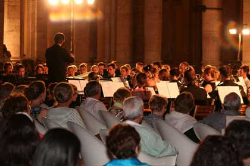
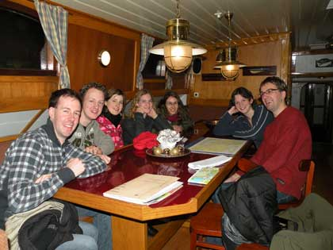

het hoe en waarom van een uniek project

ESMG Quadrivium
Het Eindhovens Studenten Muziek Gezelschap Quadrivium is met zijn 135 leden hét studentenmuziekgezelschap voor klassieke muziek in Eindhoven. De leden volgen in het algemeen opleidingen aan de Technische Universiteit, de Fontys Hogescholen en de Design Academy.
Onder de vlag van Quadrivium bestaan een harmonieorkest, een klein symfonieorkest, een blokfluitensemble en een gemengd koor. Muziek maken op hoog niveau - individueel en samen - staat hoog op de agenda van de leden van deze actieve vereniging. De muziek die wordt uitgevoerd, is voornamelijk klassiek, maar ook uitstapjes naar lichte en moderne muziek worden niet geschuwd.
In het verleden vonden reeds meerdere grootse concerten plaats op mooie locaties, zoals uitvoeringen van de Carmina Burana en The Queen Symphony in het Muziekcentrum Frits Philips te Eindhoven en een concertreis in 2007 naar het Italiaanse Toscane.
Uitgebreidere informatie over ESMG Quadrivium vindt u op http://www.studentenmuziek.nl/.
negende lustrum
Op 1 december 2009 vierde de vereniging haar 45e verjaardag en begon een feestelijk lustrumjaar met de titel Quadriviums 9e: Symfonie der elementen. Inmiddels kijkt het gezelschap terug op een druk bezocht lunchconcert en een zeer geslaagde weekendtournee met de orkesten van de drie technische universiteiten. In 2010 volgen nog een luchtinstrumentenworkshop, een solistenconcours en het opzienbarende
lustrumconcert op een drijvend podium in de Dommel, de stadsrivier van Eindhoven.
klippertournee
Het lustrumthema 'Symfonie der Elementen' vormde samen met de wens tot een verenigingsbrede tournee de inspiratie
voor het organiseren van een duurzame tournee over het water. Voortgestuwd door de wind bezeilt het gezelschap
van 12 tot en met 18 juli 2010 het IJsselmeer.
In Medemblik, Enkhuizen, Hoorn en Amsterdam zetten de jonge musici voet aan wal om in deze toeristische steden gratis toegankelijke concerten te geven.
Er staan zeer diverse concerten op stapel: qua tijdstip (matineeconcerten
en avondconcerten), qua locatie (op pleinen, in hofjes, winkelstraten en kerken) en qua programma
(elk concert wordt ingevuld door een wisselende combinatie van onderverenigingen). Het resultaat is een unieke variatie op de klassieke tournee, door de in het oog springende wijze van reizen en de openbare, verrassende concertlocaties.
organisatie

De organiserende commissie bestaat uit een gemengd gezelschap van gedreven jonge mensen met een technische, artistieke of meer sociaal maatschappelijke opleiding. Het artistieke team wordt gevormd door vier professionele dirigenten (Ghislain Bellefroid, Maartje van den Boom-Coppes, Ruud Huijbregts en Jos Schroevers) die samen met de leden van de commissie ruime ervaring hebben in het organiseren van concerten en tournees. De helden van de commissie zijn: